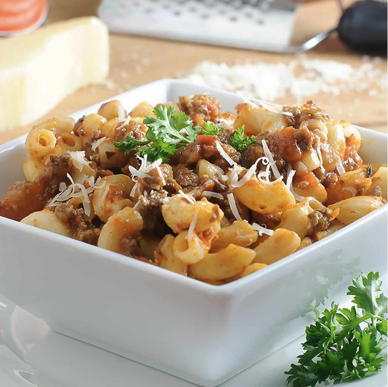

Kid-Friendly Goulash

Description
This meaty goulash recipe is quick, easy, wonderfully satisfying, and best of all, kid-approved!!
Ingredients
- 1lb ground beef (substitute with ground turkey for a leaner option)
- 500g elbow macaroni
- 3 cans tomato soup
- 1/4 cup ketchup
- 1/4 cup shredded parmesan cheese
- 1 tbsp onion powder
- 1 tsp garlic powder
Steps
- Brown beef in a skillet over medium heat; drain extra grease.
- Bring a large pot of lightly salted water to a boil. Add macaroni and cook until noodles are tender. Drain.
- Add cooked ground beef into pot with noodles. Add tomato soup, onion powder, garlic powder, and ketchup. Stir until thoroughly blended. Cover pot and cook on low heat for 8-10 mins. Stirring often.
- Serve hot. Garnish with shredded parmesan cheese.